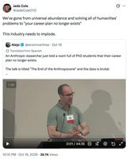
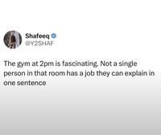

0
0
0


AMD is expanding its FSR 4.1 upscaling technology beyond Radeon RX 9000-series GPUs to Xbox Series X/S consoles, Xbox Ally handhelds, laptops, and Radeon RX 6000-series graphics cards. The Verge reports: AMD launched its FSR 4.1 update for Radeon RX 9000-series graphics cards in March, and promised to bring the technology to older GPUs and handhelds this year. FSR 4.1 can improve performance in more than 300 supported games, including Cyberpunk 2077, Battlefield 6, and Assassin's Creed Shadows.
[...] While owners of Radeon RX 6000-series GPUs and Gorgon Halo- or Strix Halo-powered devices will get FSR 4.1 today with the latest Adrenalin Edition 26.10.1 drivers, Xbox console owners will have to wait a little longer. "We've worked very closely with AMD to optimize this technology, giving developers another powerful tool for great performance and visual quality for players," says Xbox CTO Scott Van Vilet.
Read more of this story at Slashdot.
Google is beginning to replace traditional support articles with "Ask Google Help," a Gemini-powered interface that summarizes documentation and lets users troubleshoot through a chatbot. 9to5Google reports: "Ask Google Help" will display a condensed version of the support article with direct troubleshooting steps, with the user then able to type in queries to have Gemini help figure out the next step forward. A "View Sources" button at the bottom of the AI response allows users to still access the original article, but direct links to any of these articles now defaults to the AI experience.
An example can be seen below on the "Secure a hacked or compromised Google account" page that Google's own support account directed users to within the past few days. It can also be seen on the "Fix common issues with 2-Step Verification" page and, as far as we can tell, any support pages on the Google Account Help forum.
Google, as of right now, appears to only be testing this on select support topics. The Google Pixel Help section, for instance, still defaults to articles, whereas the Google Chrome topic has also moved to the new experience. Beyond support pages alone, this new design also impacts the central hub, with links to topics no longer showing by default in exchange for an AI chatbot that helps you find the relevant page.
Read more of this story at Slashdot.
New court records reportedly show that DHS targeted Stop Cop City activist Samuel Tunick at an Atlanta airport because he was under investigation for suspected "terrorist activities." However, the CBP officers told him instead that they wanted to search his phone for child sexual abuse material (CSAM). Tunick, who is not accused of terrorism or any other crime beyond allegedly wiping his GrapheneOS phone during the encounter, faces up to five years in prison. 404 Media reports: Instead of saying he was being targeted for suspected terrorism -- although this search happened just at the start of the second Trump administration, it has dramatically broadened what organizations or people may be considered such -- they said they needed his phone to look for "kiddie p*rn." "Good afternoon," an email sent from a Homeland Security Investigations (HSI) official, part of Immigration and Customs Enforcement (ICE), to CBP and other officials reads. "The following subject is scheduled to arrive in ATL [Hartsfield-Jackson Atlanta International Airport] today via DL 1778 @ 1930 Hours. TUNICK is under investigation by HSI/JTTF for suspected terrorist activities." The email includes a photo of Tunick, and asks the officials to direct him to secondary inspection, retain all of his electronics, and collect their passcodes.
As 404 Media first revealed in December, Tunick was charged because he allegedly "did knowingly destroy, damage, waste, dispose of, and otherwise take any action to delete the digital contents of a Google Pixel cellular phone, for the purpose of preventing and impairing the Government's lawful authority to take said property into its custody and control." Matthew Dodge, one of Tunick's lawyers, previously told 404 Media he only found one other case using the same obscure law, a drug trafficking case. "This is extraordinarily rare," Dodge said.
Tunick was part of the Stop Cop City movement in Atlanta, which broadly protested the building of a large police training center, and which authorities investigated for arson, vandalism, and doxing. Tunick is not suspected of any crime beyond the alleged wiping of the phone, and has previously put his current prosecution in the context of the wide spanning cases against other Stop Cop City protesters. The newly filed court record, in which Tunick's lawyers argue that evidence should be thrown out, include new photos and descriptions of the airport encounter. The CBP officials asked Tunick if they were going to find "kiddie p*rn" on his phone, which Tunick immediately denied. "As the evidentiary hearing made clear, these unfounded accusations were nothing more than pretext for a fishing expedition into the depths of Mr. Tunick's devices," the lawyers wrote. They added, "Officer Findley acknowledged that officers had no reason whatsoever to believe Mr. Tunick possessed child p*rnography," referring to one of the officials.
Read more of this story at Slashdot.
Security researchers say Meta's Muse AI assistant exposed thousands of users' shared conversations because conversation titles were placed in subdomains that could be discovered through public DNS records. Meta has since suspended the sharing feature while it considers making changes. Ars Technica reports: Like many online services, Muse has allowed users to share searches, conversations, images, and similar content with other people. Such share features usually involve clicking an option to create a unique URL that anyone can use to load a page hosting the content. To keep potentially sensitive information from being accessible to unintended people, the URLs typically contain a long sequence of text that can't be easily guessed.
Muse, which Meta CEO Mark Zuckerberg said last month was "built from the ground up for privacy and security," seems to take the same precautions. But a central design decision for constructing URLs has made the links easy to discover. As a result, researchers from security firm Claroc said they were able to enumerate 6,800 links Muse users created for sharing conversations with others. After opening a few hundred of them, the researchers found information that was clearly not intended to be publicly available... [...]. "If you had asked us beforehand, we would have guessed that gathering these would take real effort," the researchers wrote. "It took one query."
[...] The easiest way to discover the URLs is to perform a passive DNS search through one of many available commercial services. Passive DNS records store the historical resolution of domain names to IP addresses, as well as nameserver, and mail-server records over time. Passive DNS systems typically collect DNS responses from sensors positioned at recursive DNS resolvers or other infrastructure. A passive DNS record is generally created when a monitoring system observes a DNS response. In the case here, once the intended party clicks on the share link, the DNS information is recorded in a searchable database.
Claroc researchers were able to discover the Muse share links because all of them use the domain name cf.metaaiusercontent.com. Discovery is further made easy by the decision to add the conversation name to the URL, along with a long string of text. Simplified examples of such links are home-sale-budget-9f21c8a3.cf.metaaiusercontent.com, q3-revenue-review-7b1e42f0.cf.metaaiusercontent.com, and loan-application-draft-a4c9e2.cf.metaaiusercontent.com. It's this last design decision, putting the conversation title in the subdomain rather than in the URL path, that makes public discovery possible.
Read more of this story at Slashdot.
The Trump administration has banned DeepSeek AI from most US civilian federal agencies, ordering the removal of the Chinese company's models and technology developed using them. The Department of Homeland Security did not specify the security threats behind the decision. The BBC reports: The order (PDF) is broad, as it requires agencies to ditch "all DeepSeek and DeepSeek-affiliate products, and third-party products and services developed using DeepSeek implementations." Complying will be tricky as it is not clear which third-party products and services have been developed using DeepSeek's wares. Nor is it clear whether "developed using" means providing ongoing access to DeepSeek models via API or simply refers to any app vibe-coded with the help of DeepSeek.
It also leaves open the question of AI gateways. Services such as OpenRouter and Vercel AI Gateway make DeepSeek's models available through APIs. And those using gateway services may find themselves using DeepSeek models without meaning to do so. OpenRouter, for example, "routes requests to the best available providers for your model." It selects what the service deems to be the best fit provider of AI services. Vercel AI Gateway does the same by default. So federal civilian agencies could be using DeepSeek models inadvertently, if they haven't taken steps to constrain their AI providers.
Read more of this story at Slashdot.
Microsoft has reportedly abandoned plans to serve as the anchor customer for Britain's largest proposed AI supercomputer after learning that the project's Essex data center might not receive sufficient grid power until the early to mid-2030s. "Its departure leaves Nscale without a publicly announced customer for the site, although the neocloud insists the project is still going ahead," reports The Register. From the report: When the deal was announced in September 2025, the plan was to pack 23,040 Nvidia GB300 GPUs into a 50MW facility, with room to expand to 90MW. Microsoft would use the computing power for its Azure cloud services, with the first chips expected in early 2027. One important detail remained: how to power it.
As The Guardian reported last month, UK Power Networks warned Nscale that the grid capacity needed might not be available until the 2030s. A UK Power Networks spokesperson told The Register it could not discuss individual connections due to obligations under Section 105 of the Utilities Act. "However, in general, many datacenters, whilst they can connect to our distribution network, are awaiting works on the national transmission network which we do not own," the spokesperson said.
Nscale, meanwhile, isn't letting the small matter of losing its biggest customer dampen its enthusiasm. "We remain committed to both the Loughton project and the UK and we are exploring alternative power sources for the site, in addition to other expansion sites in the UK. Our relationship with Microsoft remains strong and long-term, and this unfortunate London-wide grid issue has no impact on our other contracts," Nscale told The Register.
Read more of this story at Slashdot.
Japan has successfully launched its Martian Moons eXploration (MMX) mission to study Mars' two moons, Phobos and Deimos. Scheduled to arrive in August 2027, "MMX will become the first spacecraft to land on and return samples from Phobos for study back on Earth, which scientists think could shed light on a decades-old mystery about the moons' origins" and resolve whether they were formed from a giant impact or were captured asteroids, reports Space.com. From the report: It was the 10th liftoff of Japan's expendable, two-stage H3 rocket, which was jointly developed by JAXA and Mitsubishi Heavy Industries. After clearing its launch pad today, the 207-foot-tall (63 meters) launch vehicle flew a nominal trajectory through its ascent corridor over the Pacific Ocean, jettisoning its four solid boosters in pairs just before the flight clock reached two minutes. The rocket shed its payload fairings about one minute and 20 seconds later, exposing MMX to the vacuum of space for the first time. [...] MMX is now under its own power, and on course for Mars.
The interplanetary transit will last about 10 months, with the spacecraft scheduled to arrive at the Red Planet in August 2027. When it does, MMX's propulsion module will execute an orbital insertion burn to place itself in a quasi-satellite orbit (QSO) around Phobos, which places MMX within the space around the moon as both circle Mars. MMX will spend about three years in the Martian system, devoting much of that time to studying the 14-mile-wide (22 km) Phobos with its science instruments. The spacecraft also carries the IDEFIX rover, a joint effort of the space agencies of France and Germany, which is scheduled to deploy to the surface of Phobos in late 2028 or early 2029.
After a mapping campaign to select suitable landing sites, MMX will perform two separate touchdowns on Phobos to collect and stow samples in the spacecraft's return capsule. Following its second landing and sample collection, MMX will briefly return to QSO with Phobos before transferring to a more elongated orbit around Mars that intersects with the planet's smaller moon, Deimos, which is just 8 miles (14 km) in diameter. During the last several months of its time around Mars, MMX will perform a series of Deimos flybys before departing for Earth in November 2030. If all goes according to plan, the MMX sample-return capsule will land in Australia in 2031. You can watch a recording of the launch on YouTube.
Read more of this story at Slashdot.
TP-Link plans to begin assembling routers in Mississippi as early as 2027 after the FCC banned imports of new foreign-made consumer routers over security concerns. Engadget reports: The company has signed a letter of intent with manufacturer Key Tronic and, pending approval from regulators, TP-Link says stateside assembly of its routers could start at a Mississippi production line as soon as early 2027.
Once things are up and running, Wi-Fi 8 routers are expected to be among the first TP-Link products that Key Tronic assembles. TP-Link claims that the agreement is part of its "long-term effort to accelerate US investment in high-tech manufacturing and job creation, designing and assembling next-generation products for American consumers here on American soil."
The company said it will still have to source components from outside the US. "Many [components] are just not available from a domestic source, and this is not a TP-Link issue," TP-Link's corporate affairs officer Steve Kovsky told PC Mag. "This is an issue for all manufacturers that are trying to onshore manufacturing."
Read more of this story at Slashdot.
Longtime Slashdot reader fahrbot-bot shares a report from ProPublica: A few months into President Donald Trump's second term, political appointees at the Department of Homeland Security (DHS) wanted Cybersecurity and Infrastructure Security Agency (CISA) to secretly acquire a voting machine and hack it. The appointees wanted the Cybersecurity and Infrastructure Security Agency to procure the machine, examine it and report back the findings so they could be given to the White House, according to two former administration officials with knowledge of the request.
The proposition was shocking to CISA's career staffers, according to one of the former officials. CISA typically worked to thwart hackers. Moreover, the agency had been directed not to alert the voting machine company if it uncovered flaws, contrary to its standard practices. The request made the CISA employees fear they were being asked to take part in political interference. "My thought was they could keep it in their back pocket to invalidate any [election] results they don't like," one of the former officials said. "This goes against everything CISA represents." [Or, perhaps do something worse?]
The CISA employees repeatedly told the political appointees that their request was impossible, in part because the agents capable of pulling off such an operation had just been laid off by Elon Musk's Department of Government Efficiency (DOGE) initiative. The appointees eventually stopped pressing CISA. Though not acted on, the request shows how the Trump administration has tried to use the agency for its own ends while draining it of resources for one of its critical missions: protecting the nation's voting systems.
Read more of this story at Slashdot.
An anonymous reader quotes a report from The Verge: A hacker broke into more than 100 websites using an army of AI agents that mostly operated on their own, according to findings from the AI security firm Norforge. Though Norforge doesn't name the targets, Reuters reports that the victims included companies like John Deere, SharkNinja, and Cummins.
[...] Researchers at Norforge uncovered the attacks through exposed work on Cairn, an open-source AI platform that describes itself as a "general-purpose problem-solving engine." With Cairn, users set a start and end point for the AI agents, which document their progress as they move forward with the task. However, as noted by Norforge, hackers can also use the tool to orchestrate cyberattacks using AI agents.
The hacker who broke into more than 100 sites was the "most active" among the exposed Cairn instances discovered by Norforge, waging attacks on companies based in the US, Canada, Australia, and Japan, as reported by Reuters. This attacker laid out "preferred intrusion tactics" using fewer than 100 Chinese characters, with successful breaches taking about 23 hours, according to Reuters. Overall, Nordforge found more than 20 exposed Cairn instances that are "likely malicious." A John Deere spokesperson said there is "no indication that sensitive information was accessed" as a result of the attack, while Cummins said it's "investigating the report of a potential cyber-attack on a website operated by one of our third-party vendors."
Meanwhile, SharkNinja says the breach impacted a standalone site with product support information, and that it has contained the threat.
Read more of this story at Slashdot.
An anonymous reader quotes a report from TechCrunch: Amazon is funding development of a proposed 960-megawatt nuclear plant in Indiana and would be the first customer to buy its power, the companies announced Monday. Utility company American Electric Power (AEP) would operate the plant. X-energy, which designs small modular nuclear reactors and went public in April, would supply the reactors. The new power plant would consist of 12 Xe-100 small modular reactors and be located on the site of a demolished coal power plant just south of Terre Haute. The deal is the second commercial agreement between Amazon and X-energy, and it's three times larger than the first, which was announced two years ago.
Amazon has invested heavily in X-energy, leading a $700 million Series C-1 round in October 2024. The two companies have said they ultimately plan to build 5 gigawatts of new nuclear generating capacity in the U.S. by 2039. Unlike many newly announced power plants, these reactors would be connected to the public electric grid, though Amazon says the power would also serve its data centers.
The companies' aggressive timeline still depends on X-energy successfully delivering its first power plant at a Dow Chemical plant southeast of Houston, Texas. The site, called Seadrift, has recently been at the center of a lawsuit filed by the state of Texas, which accuses the plant of "habitual non-compliance" with water and solid-waste regulations and permits. X-energy has yet to break ground at Seadrift, which will host four Xe-100 reactors to provide the chemical plant with heat and electricity. The company said its construction permit is in the final phases of the U.S. Nuclear Regulatory Commission's review process.
Read more of this story at Slashdot.
Sony has revived its Walkman lineup with three Android 16-powered high-end music players ranging from $1,900 to $5,900, topped by the gold-plated NW-WM1ZM3 with 256GB of storage. The Register reports: The Japanese giant named the new models the NW-WM1ZM3, NW-WM1AM3 and NW-ZX900. All can store and play many codecs, including MP3s, WMA, and FLAC files, plus others like Direct Stream Digital (DSD) and Apple Lossless, which use various tricks to avoid nasty artefacts accruing during the digitization process. Sony also says it has used "key components made from oxygen-free copper" because that apparently delivers "uncompromising sound quality."
The machines also include "screws featuring a low-resistance gold-plated treatment ... providing a stable ground connection that delivers powerful bass, an expansive soundstage and smooth, extended high frequencies." Sony claims even the cabling it's used in the devices "further reduces noise and preserves signal integrity for rich, detailed sound." They're also housed in carefully-milled slabs of copper -- gold-plated in the case of the NW-WM1ZM3 -- because that apparently improves sound, too.
And then Sony's gone and spoiled it all by offering Bluetooth connectivity, a notorious music-mangler, in addition to wired headphone ports. Sony's US site lists all three devices, which run Android 16 and include Wi-Fi so they can access streaming music services. All are USB-chargeable and Sony claims their batteries allow 30-odd hours of music playback.
Read more of this story at Slashdot.
OpenBSD 8.0 has been released with major virtualization and hardware upgrades, including support for up to 64 vCPUs per VM, Intel Arc graphics, ARM64 hibernation, and expanded RISC-V support. Linuxiac points out that it marks the "61st release of the security-focused Unix-like operating system." From the report: Several fixes improve compatibility with 32-bit Linux guests, while changes to virtual machine ownership management and interrupt emulation make the virtualization infrastructure more capable. Graphics support has also been upgraded, with DRM drivers updated to those from Linux kernel 6.18.53. Notably, OpenBSD 8.0 adds support for Intel Arc A-Series (Alchemist) graphics cards through the inteldrm driver.
Another important change increases the amd64 kernel's virtual address space from 4 GB to 512 GB, allowing the system to map over 4 GB of video memory. The release also addresses GPU timeout issues affecting some Intel Alder Lake systems. [...] For security, OpenBSD 8.0 adds checks and fixes across the kernel and system utilities, including improvements to pledge and unveil, tighter validation of executable files, and protections against memory corruption and information disclosure. A full list of changes can be found here.
Further reading: Wine Ported to OpenBSD
Read more of this story at Slashdot.
An anonymous reader quotes a report from Reuters: Nscale is in talks to sell AI computing power to Claude maker Anthropic in a new deal that could be worth about $45 billion, a person familiar with the matter told Reuters on Monday. The data center developer is seeking another major deal with the AI lab for a second facility at its Monarch data center campus in West Virginia, the person said. In August, Anthropic struck a deal to spend $45 billion to rent AI cloud computing power from Nscale's West Virginia data center campus. A second Monarch building would deliver 460 megawatts of computing power using Nvidia's advanced Vera Rubin AI chips, according to the source. [...] According to the Nscale prospectus, Microsoft and Anthropic are expected to be the company's major customers in the future. Further reading: Microsoft Abandons UK AI Supercomputer As Grid Struggles to Keep Up
Read more of this story at Slashdot.
joshuark writes: Professor Christopher Marquis makes a provocative argument about business schools: "We need to abolish them." A 20-year business educator at Harvard, Cornell and Cambridge, Marquis argues in The New York Times and on LinkedIn that MBA programs sanctify profit-driven dealmaking at the expense of public life. "That's not the institution failing," he writes. "Sadly, it's the institution working." "Business school doesn't just hand out skills and a network," argues Marquis, "it quietly reshapes how people see the world, rewarding dealmaking, simplification, and optimization for financial metrics, while workers and communities become afterthoughts."
Marquis points to research suggesting that business-school-trained CEOs often benefit shareholders at the expense of workers, without delivering measurable improvements in company performance... "[W]hen a business-school-trained CEO takes over a firm, wages fall and labor's share of income drops, with no gain in productivity," writes Marquis. "In both the U.S. and Denmark, what passes for the 'managerial skill' of business-school graduates turns out to be a transfer of wealth away from workers and toward shareholders. Students deserve better than a machine that narrows their sense of what's possible."
Read more of this story at Slashdot.
Dina Bass / Bloomberg : Pigment, a French startup that makes AI-powered software to help businesses forecast finances, spin up slide decks, and more, raised $250M at a $2.3B valuation — Pigment, a French AI company that competes with Microsoft's Excel and PowerPoint, has raised $250 million in a funding round …
Lawrence Abrams / BleepingComputer : PHP development team plans to release updates tomorrow to address two vulnerabilities, each rated 9.2; security researchers at watchTowr say they are RCE flaws — The PHP security team is warning administrators to prepare for emergency security updates tomorrow to address two critical vulnerabilities …
Andrew J. Hawkins / The Verge : Elon Musk says Tesla and SpaceX have formed special committees to discuss a possible merger and calls the possibility of a Tesla-SpaceX merger a “good idea” — Musk called the merger “a good idea,” though it cautioned it wasn't a guarantee.
Dan Goodin / Ars Technica : Eight intermediate TLS certificates from eMudhra with private key sizes of just 3 to 8 bits were compromised; browser makers and major apps have blocked them — Security personnel around the world are on high alert Tuesday following the discovery of eight TLS certificates with private keys …
Dina Bass / Bloomberg : Super Micro reports preliminary Q1 revenues of $18.5B to $19.5B, vs. $15B est., and gross margins of 12% to 12.5%; SMCI jumps 11%+ after hours — Super Micro Computer Inc. jumped in late trading after reporting preliminary quarterly results that topped analysts' estimates.
Becky Peterson / Wall Street Journal : SpaceX reports Q3 capex of $19.6B, up from $6.9B a year earlier, and Q3 connectivity revenue, which includes Starlink, up 69% YoY to $5.2B — Artificial intelligence revenue surges around 830% while capital spending on data center build-out and developing new technology continues
David Morris / Bloomberg : Report: Anthropic's draft S-1 shows it spent ~$9B on compute and infrastructure in H1, up from $2.3B a year earlier, and could spend $750B in the coming years — Anthropic PBC could spend $750 billion on additional computing power in the coming years, according to a Wall Street Journal report …
Todd Spangler / Variety : Netflix says it expects FY 2026 ad revenue of ~$2.7B, under its ~$3B forecast, and its Q4 operating margin will be impacted due to costs associated with layoffs — But the streamer faces an urgent need to refresh its queue: Revenue growth in the period slowed to its lowest rate in three years …
Wall Street Journal : Sources: Elon Musk ordered Starshield slowdown in Ukraine and discussed it with Trump after the issue became public; some US officials say he acted unilaterally — The SpaceX founder authorized the move and has been discussing Ukraine with Trump, but the president has denied ordering the restrictions
Lora Kolodny / CNBC : SpaceX reports Q3 revenue up 161% YoY to $14.58B, vs. $12.72B est., AI revenue up 830% to $7.56B, and AI operating income of $431M, up from a loss of $1.7B — SpaceX reported 161% revenue growth for the third quarter, driven by the company's artificial intelligence business and Starlink Subscriber growth.
Nicole Sperling / New York Times : Netflix says despite investor concern about its view-hours growth, its engagement is “healthy” and it will try to bring more third-party content to its service — The streaming service reported a 12 percent increase in quarterly revenue, but acknowledged that stagnant viewership …
Sarah Whitten / CNBC : Netflix reports Q3 revenue up 12% YoY to $12.87B, in line with est., net income up 44% YoY to $3.66B, in part due to expenses timing; NFLX drops 5%+ after hours — Netflix on Tuesday reported third-quarter earnings that topped analyst estimates and revenue that was in line as Wall Street eyes …
Anissa Gardizy / Wall Street Journal : Anthropic's IPO prospectus: H1 2026 revenue of $16.3B, ~20% from two customers, vs. $1.1B in H1 2025, and an $80.7B net loss driven by accounting charges — In a new draft prospectus viewed by the Journal, the AI giant disclosed an $80.7 billion net loss for the first half of 2026 and a long list of risk factors
Sebastian Herrera / Fortune : A profile of Xbox CEO Asha Sharma; sources: Xbox plans a major Game Pass overhaul, a next-gen handheld device by late 2027, and a next-gen console by late 2028 — Xbox CEO Asha Sharma. — Asha Sharma returns from one of her walking meetings around Microsoft's sprawling campus in Redmond …
Spencer Soper / Bloomberg : Amazon plans to hire 300K+ US seasonal, part-time, and full-time workers for the upcoming holiday shopping season, up 20% YoY, paying $20-$24/hour on average — Amazon.com Inc. plans to hire more than 300,000 workers during the holiday shopping season, up 20% from a year ago …